Справочник по Angular и React · модуль 1 · автоматизация
А1
Заявка → n8n
→ Telegram
На этой странице доска заявок начинает сообщать ответственному о каждой новой заявке в Telegram. Сервис автоматизации n8n запускается на компьютере в Docker одной командой. Затем через @BotFather создаётся бот Telegram, а в n8n собирается процесс из двух блоков: «принять заявку» и «отправить сообщение в Telegram». Код доски менять не нужно: в главе 1.7 он уже отправляет заявку на адрес n8n.
- Категория
- Автоматизация, n8n, Telegram
- Уровень
- Начальный
- Что понадобится
- Проект
zayavkiпосле главы 1.7, Docker Desktop, Telegram на телефоне или компьютере, браузер Chrome, Edge или Яндекс Браузер - Результат
- Новая заявка с доски приходит сообщением от бота в Telegram, токен бота хранится только в n8n
Готовые файлы для этой страницы
В архиве папка avtomatizaciya с двумя файлами: compose.yaml запускает n8n, zayavka-telegram.json — шаблон процесса для вставки в n8n. Оба файла также приведены на странице, их можно скопировать оттуда. Проект доски после главы 1.7 — в архиве главы 1.7.
§1Как устроена автоматизация
РазбираемсяКто что делает
В колледже есть окошко приёма заявок и дежурный мастер с телефоном. Посетитель оставляет заявку в окошке, сотрудник окошка звонит мастеру и пересказывает её. Посетитель не знает номер мастера и не звонит ему сам. Доска заявок — окошко, n8n — сотрудник, который звонит, Telegram — телефон мастера.
Сотрудник окошка решает сам, кому позвонить. n8n делает только то, что записано в процессе: принять заявку и отправить сообщение в заданный чат.
Новые инструменты этой страницы:
- n8n (читается «эн-эйт-эн») — сервис автоматизации. В нём процессы собираются из блоков мышью: «когда пришло то-то, сделай то-то». Блоки называются узлами (nodes), а процесс — workflow.
- Вебхук (webhook) — адрес, по которому процесс n8n принимает запросы. Доска отправляет заявку на адрес
http://localhost:5678/webhook/zayavka, и процесс запускается. - Бот Telegram — учётная запись Telegram, которой управляет программа. Программа пишет от имени бота через Bot API — набор адресов на серверах Telegram.
- Токен бота — пароль, по которому Telegram узнаёт программу, управляющую ботом. Кто знает токен, может писать от имени бота.
- Docker — программа, которая запускает другие программы в изолированных контейнерах. В контейнере программа работает вместе со всем, что ей нужно, отдельно от остальной системы. n8n запускается в контейнере одной командой, без установки Node.js-пакетов и баз.
На схеме — путь заявки от формы до телефона.
Путь заявки: доска → n8n → Telegram
Доска знает только адрес вебхука. Токен бота хранится в n8n, и в браузер он не попадает.
Почему токен хранится в n8n. Всё, что доска присылает браузеру, может прочитать любой посетитель: в DevTools видны файлы проекта и все запросы. Токен в коде доски означал бы, что любой посетитель может писать от имени бота. Поэтому секреты держат на сервере, в n8n, а доска отправляет только данные заявки. Это правило дисциплины из главы 0.5: токены и ключи не попадают в код фронтенда.
Сначала нужен сам n8n. Его запускает Docker.
§2Docker и n8n
ДелаемУстанавливаем Docker и запускаем n8n
- Установите Docker Desktop
Скачайте Docker Desktop с docker.com/products/docker-desktop для своей системы и установите. Для учёбы и личного использования он бесплатный. Запустите Docker Desktop и дождитесь, пока в его окне появится надпись о том, что движок запущен (Engine running).
- Проверьте установку
В терминале VS Code выполните команду. Ответ — номер версии, например
Docker version 29.7.2.Терминал docker --version
- Создайте папку и файл compose.yaml
В проводнике VS Code в корне
react-kursсоздайте папкуavtomatizaciya, в ней — файлcompose.yaml. Вставьте текст и сохраните. Отступы важны: в этом формате вложенность задаётся пробелами.react-kurs/avtomatizaciya/compose.yaml services: n8n: image: n8nio/n8n:2.45.4 ports: - "5678:5678" environment: - GENERIC_TIMEZONE=Europe/Moscow - TZ=Europe/Moscow - N8N_DEFAULT_LOCALE=en volumes: - n8n_data:/home/node/.n8n volumes: n8n_data: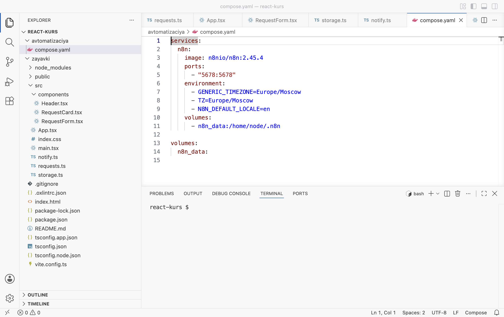
Так должен выглядеть проект: папка avtomatizaciya рядом с zayavki - Запустите n8n
Откройте второй терминал (Terminal → New Terminal; первый занят сервером доски) и выполните команды. Первый запуск скачивает образ n8n, это несколько минут.
Терминал · папка react-kurs cd avtomatizaciya docker compose up -d docker compose ps
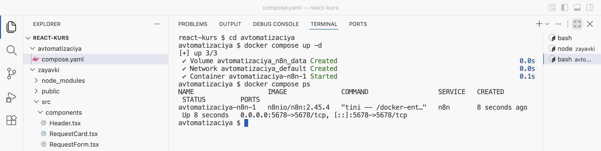
Контейнер avtomatizaciya-n8n-1 запущен (Up), порт 5678 открыт - Создайте учётную запись n8n
Откройте в браузере
http://localhost:5678. Заполните форму: почта, имя, фамилия, пароль (не короче 8 символов, с цифрой и заглавной буквой). Нажмите Next. Учётная запись хранится только в этом n8n на вашем компьютере, письмо на почту не приходит.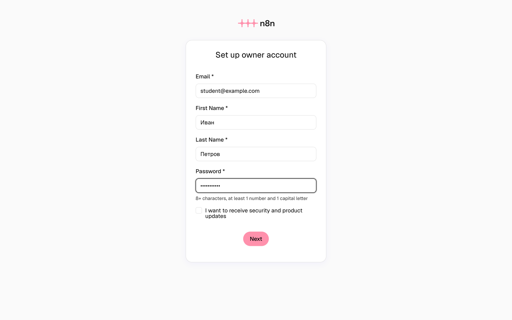
Первый вход: учётная запись владельца n8n - Пропустите анкету
n8n спросит о компании и роли. Поля можно не заполнять: нажмите Get started.
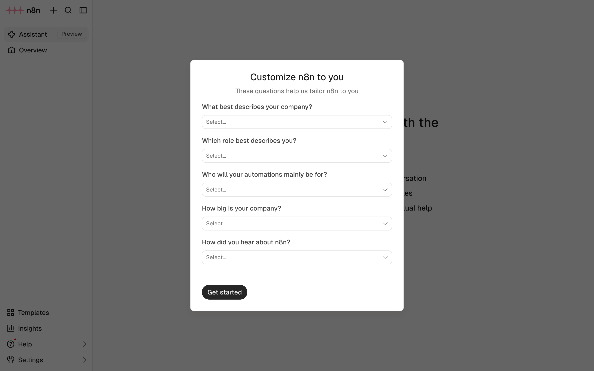
Анкета необязательная: Get started
РазбираемсяЧто написано в compose.yaml
services: n8n: 1 image: n8nio/n8n:2.45.4 2 ports: - "5678:5678" 3 environment: - GENERIC_TIMEZONE=Europe/Moscow 4 - TZ=Europe/Moscow - N8N_DEFAULT_LOCALE=en volumes: - n8n_data:/home/node/.n8n 5 volumes: n8n_data: 6
- 1
Описывается одна служба с именем
n8n. В модуле 2 сюда добавится база PocketBase, и обе службы будут запускаться одной командой. - 2
Образ — готовая сборка программы для Docker, как установочный диск.
n8nio/n8n— образ n8n,2.45.4— версия. Версия указана точно, чтобы у всех студентов был одинаковый n8n и кадры совпадали с экраном. - 3
«Порт 5678 компьютера соединить с портом 5678 контейнера». Поэтому n8n открывается по адресу
localhost:5678. - 4
Часовой пояс: время запусков в n8n будет московским.
- 5
Том (volume) — папка для данных, которая живёт отдельно от контейнера. В ней n8n хранит учётную запись, процессы и токен бота. Без тома всё пропадало бы при пересоздании контейнера.
- 6
Объявление тома
n8n_data. Docker создаёт его сам при первом запуске — на кадре строкаVolume avtomatizaciya_n8n_data Created.
Команда docker compose up -d читает compose.yaml в текущей папке и запускает описанные службы. -d — «в фоне»: терминал остаётся свободным. docker compose ps показывает запущенные контейнеры: в столбце STATUS должно быть Up. Остановить n8n — docker compose stop, запустить снова — docker compose start. На следующем занятии достаточно запустить Docker Desktop и выполнить docker compose start в папке avtomatizaciya.
n8n работает. Прежде чем собирать процесс, нужен бот, от имени которого n8n будет писать.
§3Бот в Telegram
ДелаемСоздаём бота и узнаём номер чата
- Создайте бота в @BotFather
В Telegram найдите @BotFather — официальный бот Telegram для создания ботов, с синей галочкой. Нажмите Start и отправьте команду
/newbot. BotFather спросит имя бота — его видят в чате, например «Доска заявок ИТ-отдела». Затем — адрес бота латиницей, обязательно с окончаниемbot, напримерzayavki_ivanov_bot. Адрес должен быть свободным: если занят, BotFather попросит другой.Кадр: диалог с @BotFatherКоманда /newbot, имя, адрес и ответ с токеном (токен закрыт).
- Сохраните токен
В последнем сообщении BotFather пришлёт токен вида
1234567890:AAH…. Скопируйте его в надёжное место. Токен не вставляют в код доски, в чаты с ИИ и в репозиторий на GitHub. Если токен попал в чужие руки, в BotFather командой/revokeвыдаётся новый, а старый перестаёт работать. - Напишите боту
Откройте своего бота по ссылке из сообщения BotFather и нажмите Start. Бот не может написать человеку первым: пока вы не нажали Start, сообщения от него не дойдут.
- Узнайте номер чата
Откройте в браузере адрес ниже, подставив свой токен вместо
ТОКЕН(словоbotперед ним остаётся). В ответе найдите"chat":{"id":— число после него и есть номер вашего чата с ботом.Адрес в браузере https://api.telegram.org/botТОКЕН/getUpdates
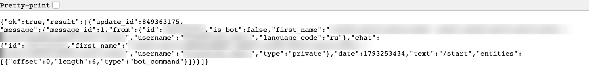
Ответ getUpdates: номер чата — после "chat":{"id": (на кадре размыт, как и имя) Если в ответе
"result":[]— пустой список, боту ещё никто не писал: нажмите Start в чате с ботом и обновите страницу.
РазбираемсяЧто вернул getUpdates
getUpdates — адрес Bot API, который отдаёт новые сообщения, присланные боту. Ответ — JSON, тот же формат, что в главе 1.7. В нём список result, в каждом элементе — сообщение message. Поле from описывает того, кто написал, поле chat — чат, где это произошло. Для личной переписки номер чата совпадает с номером пользователя. Этот номер n8n укажет, когда будет отправлять сообщение: куда писать.
Есть токен и номер чата. Осталось собрать процесс в n8n.
§4Процесс в n8n
ДелаемВставляем шаблон процесса
- Создайте пустой процесс
На главной странице n8n нажмите Build a workflow. Откроется пустой холст.
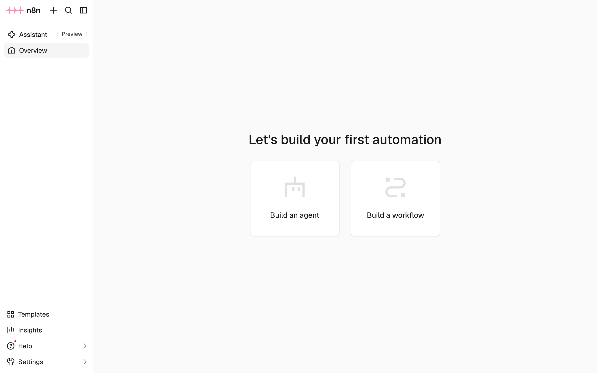
Главная n8n: Build a workflow - Скопируйте шаблон
Нажмите «копировать» у блока ниже. Это описание процесса из двух узлов в формате JSON; n8n принимает такой текст при вставке.
avtomatizaciya/zayavka-telegram.json { "name": "Заявка → Telegram", "nodes": [ { "parameters": { "httpMethod": "POST", "path": "zayavka", "options": { "allowedOrigins": "http://localhost:5173" } }, "name": "Webhook", "type": "n8n-nodes-base.webhook", "typeVersion": 2.1, "position": [0, 0], "webhookId": "zayavka" }, { "parameters": { "chatId": "", "text": "=Новая заявка: {{ $json.body.title }}\nКабинет: {{ $json.body.room }} · {{ $json.body.category }}\n{{ $json.body.details }}", "additionalFields": { "appendAttribution": false } }, "name": "Telegram", "type": "n8n-nodes-base.telegram", "typeVersion": 1.2, "position": [260, 0] } ], "connections": { "Webhook": { "main": [[{ "node": "Telegram", "type": "main", "index": 0 }]] } } } - Вставьте шаблон на холст
Щёлкните по пустому месту холста и нажмите Ctrl+V (на macOS Cmd+V). Если появится окно Pasting this from an AI tool?, нажмите Skip.
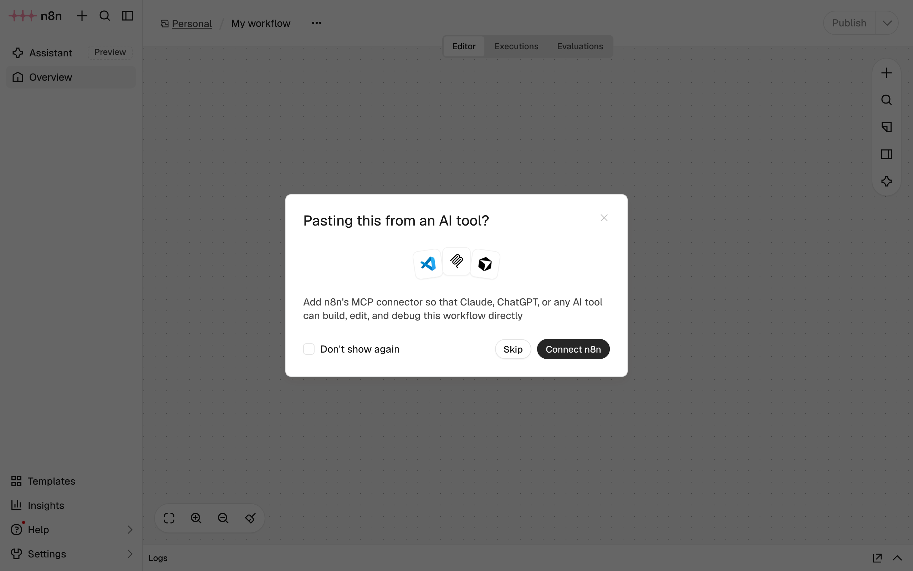
Окно о помощниках ИИ появляется не всегда: Skip - Сохраните процесс
На холсте два узла: Webhook и Telegram. У Telegram красный значок: токен ещё не подключён. Нажмите Ctrl+S.
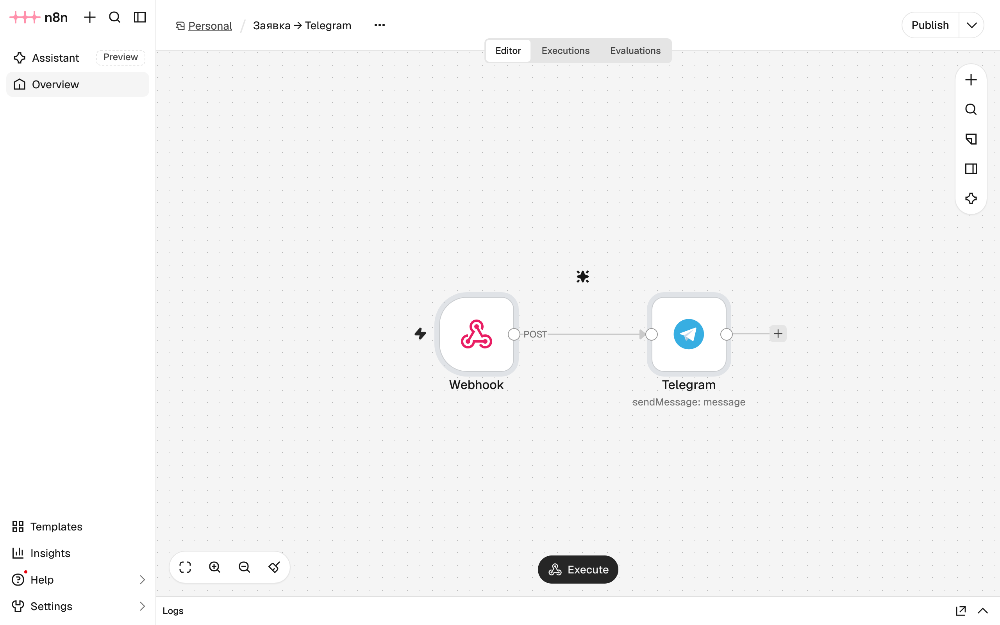
Процесс «Заявка → Telegram»: два узла, у Telegram красный значок - Посмотрите узел Webhook
Дважды щёлкните по узлу Webhook. Менять в нём ничего не нужно: метод POST, путь
zayavka, разрешённый адресhttp://localhost:5173. Закройте окно крестиком справа вверху.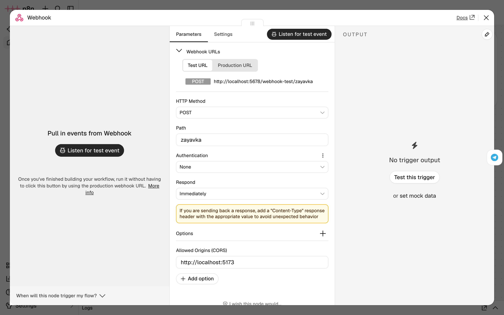
Узел Webhook: POST, путь zayavka, Allowed Origins — адрес доски
ДелаемПодключаем бота
- Откройте узел Telegram
Дважды щёлкните по узлу Telegram. Поле Credential предлагает кнопку Connect to Telegram, поле Chat ID пустое и отмечено значком ошибки.
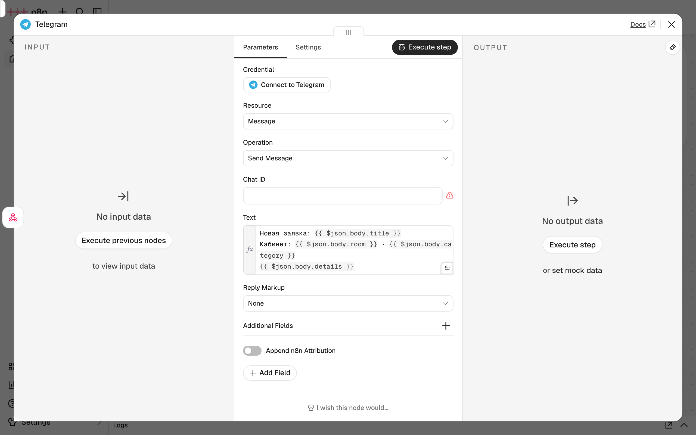
Узел Telegram до настройки - Подключите токен
Нажмите Connect to Telegram. В окне Telegram account вставьте токен в поле Access Token и нажмите Save. Внизу появится «Credential successfully created». Закройте окно крестиком.
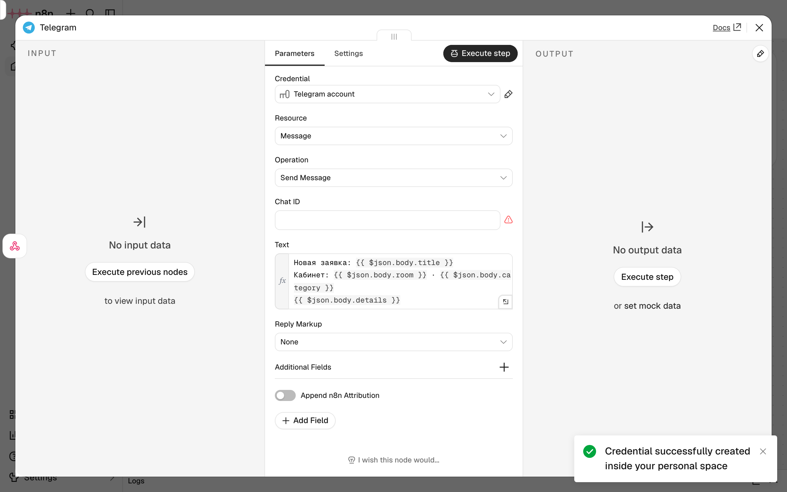
Токен сохранён в n8n; в поле он виден только точками - Укажите номер чата
В поле Chat ID вставьте номер чата из §3. В поле Credential теперь стоит Telegram account.
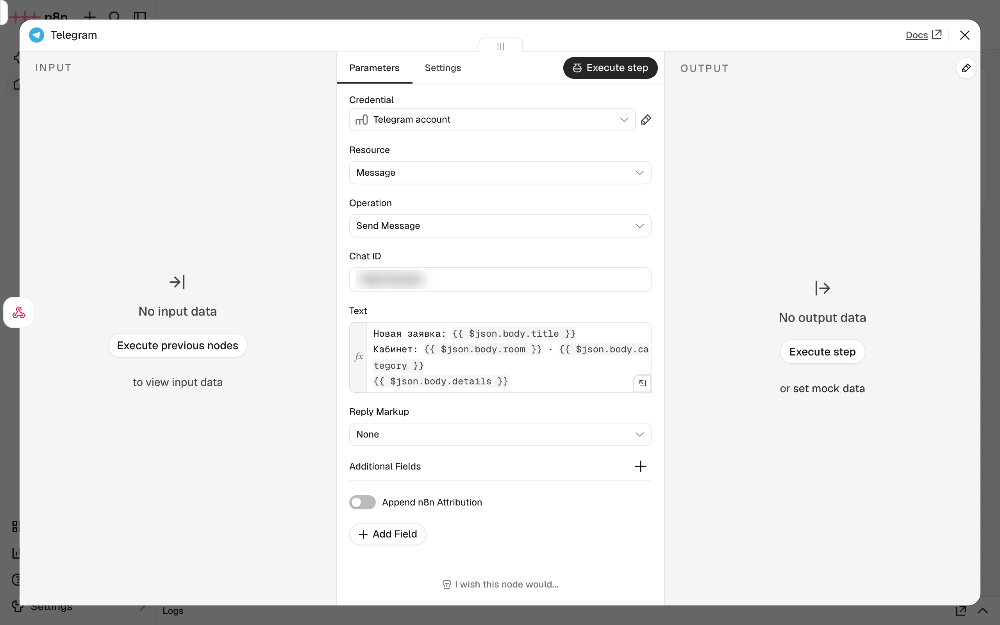
Chat ID заполнен (на кадре размыт), Credential — Telegram account - Сохраните и опубликуйте
Закройте окно узла, нажмите Ctrl+S, затем кнопку Publish справа вверху. В окне Publish workflow имя версии можно оставить как есть; нажмите Publish. Появится окно Workflow published: рабочий адрес вебхука готов принимать запросы. Нажмите Got it. Справа вверху вместо кнопки Publish теперь зелёная точка и надпись Published.
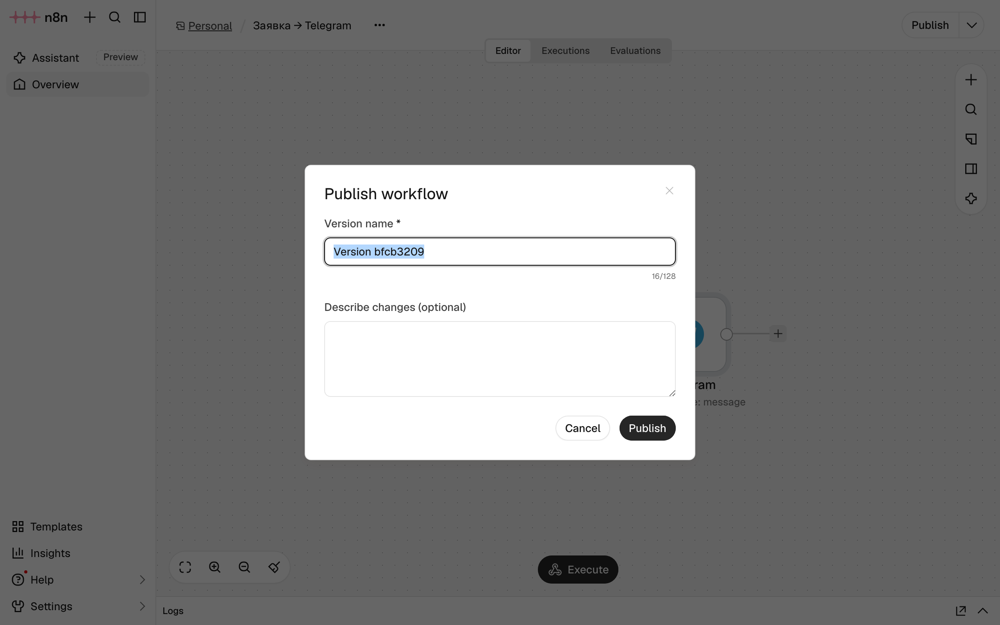
Окно публикации: Publish 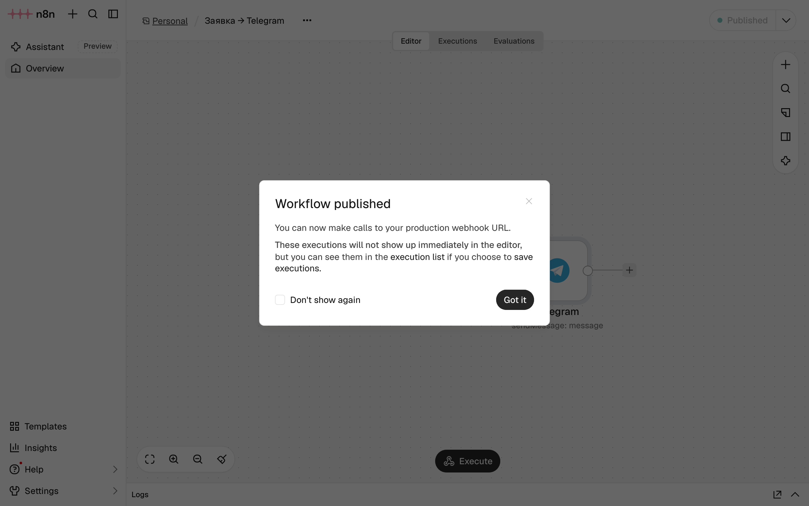
Окно Workflow published: Got it; справа вверху — Published
РазбираемсяЧто делает шаблон процесса
{
"name": "Заявка → Telegram",
"nodes": [
{
"parameters": {
"httpMethod": "POST", 1
"path": "zayavka", 2
"options": {
"allowedOrigins": "http://localhost:5173" 3
}
},
"name": "Webhook",
"type": "n8n-nodes-base.webhook",
"typeVersion": 2.1,
"position": [0, 0],
"webhookId": "zayavka"
},
{
"parameters": {
"chatId": "", 4
"text": "=Новая заявка: {{ $json.body.title }}\nКабинет: {{ $json.body.room }} · {{ $json.body.category }}\n{{ $json.body.details }}", 5
"additionalFields": {
"appendAttribution": false 6
}
},
"name": "Telegram",
"type": "n8n-nodes-base.telegram",
"typeVersion": 1.2,
"position": [260, 0]
}- 1
Узел Webhook принимает запросы с методом POST — тем, которым доска отправляет заявку в
notify.ts. - 2
Путь вебхука. Из него получается адрес
http://localhost:5678/webhook/zayavka— тот самыйWEBHOOK_URLиз главы 1.7. - 3
«Принимать запросы со страницы
http://localhost:5173». Это настройка CORS, о ней — ниже. - 4
Номер чата пустой: у каждого студента он свой и вписывается в n8n вручную.
- 5
Текст сообщения. Знак
=в начале значит «это выражение». В двойных фигурных скобках n8n подставляет данные:$json.body— тело пришедшего запроса, то есть заявка;.title— её поле.\n— перенос строки. - 6
Не добавлять в конец сообщения подпись «This message was sent automatically with n8n».
У вебхука два адреса — переключатель Test URL / Production URL на кадре узла. Тестовый, /webhook-test/zayavka, работает, пока в редакторе нажата кнопка Listen for test event, и показывает пришедшие данные прямо на холсте. Рабочий, /webhook/zayavka, работает всегда, когда процесс опубликован. Доска отправляет заявки на рабочий адрес, поэтому без публикации n8n отвечает ошибкой 404.
CORS (Cross-Origin Resource Sharing — «обмен между разными источниками») — правило браузера. Страница с одного адреса (localhost:5173) может отправить запрос на другой (localhost:5678), только если тот сервер явно разрешил. Перед заявкой браузер сам отправляет короткий проверочный запрос и смотрит ответ сервера: есть ли в нём Access-Control-Allow-Origin: http://localhost:5173. Поле Allowed Origins (CORS) в узле Webhook и даёт этот ответ. Если доску открыть с другого адреса, браузер заблокирует запрос, а в консоли появится ошибка со словами blocked by CORS policy.
Процесс опубликован. Осталось проверить всё вместе.
§5Проверка: заявка в Telegram
ДелаемОтправляем заявку с доски
- Отправьте заявку
Откройте доску (
http://localhost:5173), обновите страницу и отправьте заявку: «Не работает проектор в актовом зале», кабинет «Актовый зал», категория «Проектор», подробности «Проектор не видит ноутбук, кабель HDMI подключён.». Над списком — «Заявка добавлена, уведомление отправлено.».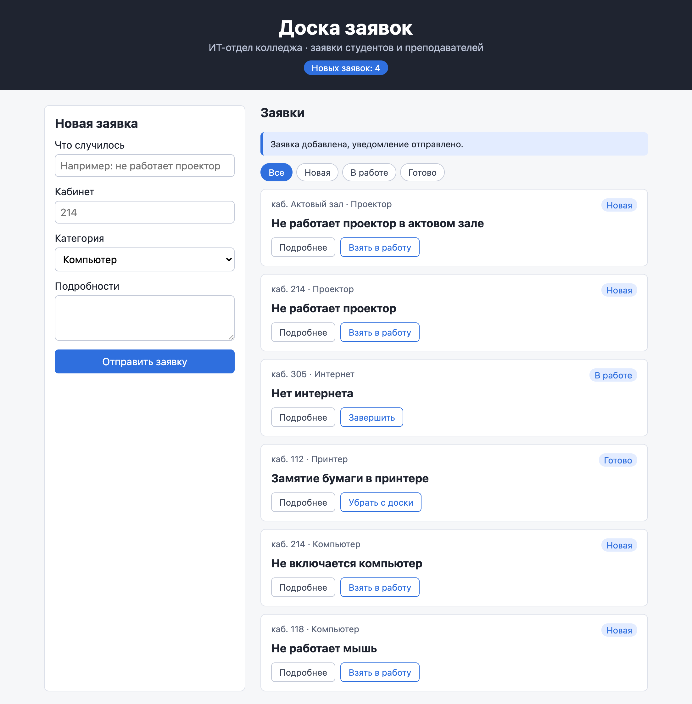
Доска: уведомление отправлено - Проверьте Telegram
Через несколько секунд бот пришлёт сообщение с названием, кабинетом, категорией и подробностями.
Кадр: сообщение от бота в Telegram«Новая заявка: Не работает проектор в актовом зале / Кабинет: Актовый зал · Проектор / Проектор не видит ноутбук…»
- Посмотрите запуск в n8n
В n8n откройте вкладку Executions над холстом. Последний запуск — Succeeded, оба узла с зелёной галочкой.
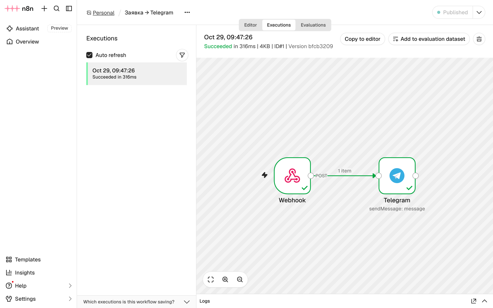
Запуск прошёл: оба узла зелёные
РазбираемсяЧто произошло за эти секунды
import type { RequestItem } from './requests' const WEBHOOK_URL = 'http://localhost:5678/webhook/zayavka' export async function sendRequest(request: RequestItem): Promise<boolean> { try { const response = await fetch(WEBHOOK_URL, { method: 'POST', headers: { 'Content-Type': 'application/json' }, body: JSON.stringify(request), }) return response.ok } catch { return false } }
- Доска отправляет запрос
sendRequestиз главы 1.7 отправляет заявку методом POST на рабочий адрес вебхука.тело запросаtitle: 'Не работает проектор в актовом зале'room: 'Актовый зал'category: 'Проектор'… - Браузер проверяет CORS
Перед заявкой браузер спрашивает n8n, можно ли странице
localhost:5173отправлять сюда запросы. n8n отвечает: можно, этот адрес указан в Allowed Origins. - n8n сразу отвечает 200
Узел Webhook настроен отвечать немедленно (Respond: Immediately). Доска получает «200 OK»,
response.ok— «да», и над списком появляется «уведомление отправлено».response.status200 - Узел Telegram собирает текст
n8n подставляет поля заявки в шаблон текста и отправляет его в Bot API с токеном бота и номером чата. Токен при этом не покидает n8n.
- Сообщение приходит
Telegram доставляет сообщение от бота в ваш чат. Запуск попадает в список Executions со статусом Succeeded.
ДелаемОпыт: n8n остановлен
- Остановите n8n
Во втором терминале в папке
avtomatizaciyaвыполнитеdocker compose stop. - Отправьте заявку
Заявка появляется на доске, над списком — «Заявка добавлена, но уведомление не отправлено: сервер автоматизации недоступен.», как в опыте главы 1.7. Сообщение в Telegram не приходит.
- Запустите n8n снова
Выполните
docker compose startи подождите полминуты, пока n8n запустится. Новая заявка снова дойдёт до Telegram. Заявка, отправленная при выключенном n8n, в Telegram уже не придёт: доска не повторяет неудачные запросы.
Доска и автоматизация работают независимо: поломка n8n не мешает принимать заявки. Этим и объясняется порядок в handleAdd из главы 1.7: сначала заявка на доску, потом уведомление.
§6Частые ошибки
Сообщения ниже получены на n8n 2.45.4 и Bot API Telegram; ошибки Telegram видны в n8n на вкладке Executions — у узла Telegram в неудачном запуске.
| Что видно | Почему | Что сделать |
|---|---|---|
Доска: «уведомление не отправлено». Консоль: net::ERR_CONNECTION_REFUSED | n8n не запущен или Docker Desktop закрыт | Запустить Docker Desktop, в папке avtomatizaciya выполнить docker compose start |
Ответ n8n: The requested webhook "POST zayavka" is not registered. Подсказка: The workflow must be active for a production URL to run successfully. | Процесс не опубликован, или путь вебхука не zayavka | Нажать Publish; сверить путь в узле Webhook с адресом в notify.ts |
Консоль: … has been blocked by CORS policy … The 'Access-Control-Allow-Origin' header has a value 'http://localhost:5173' that is not equal to the supplied origin. | Доска открыта с другого адреса, например 127.0.0.1:5173 или localhost:5174 | Открыть доску по адресу http://localhost:5173 или вписать нужный адрес в Allowed Origins и опубликовать заново |
Executions, узел Telegram: Bad Request: chat not found | Неверный Chat ID, или вы не нажали Start в чате с ботом | Нажать Start у бота, взять номер из getUpdates заново |
Executions, узел Telegram: Unauthorized | Неверный токен или токен отозван через /revoke | Вставить актуальный токен в Credential «Telegram account» |
getUpdates: {"ok":true,"result":[]} | Боту ещё никто не писал | Нажать Start в чате с ботом и обновить страницу |
| Сообщение приходит, но вместо названия пусто | В тексте узла Telegram опечатка в имени поля, например $json.body.titel | Сверить имена полей с RequestItem из requests.ts |
| Поля узла серые, внизу холста «Editing in another tab» | Процесс открыт ещё в одной вкладке браузера | Закрыть лишнюю вкладку или нажать Edit here |
§7Проверьте себя
Почему токен бота хранится в n8n?
Код доски выполняется в браузере, и любой посетитель может прочитать его и все запросы в DevTools. Токен в коде дал бы любому возможность писать от имени бота. n8n работает на сервере, и токен из него в браузер не попадает.
Чем Test URL вебхука отличается от Production URL?
Test URL (/webhook-test/…) работает, только пока в редакторе нажато Listen for test event, и показывает данные на холсте. Production URL (/webhook/…) работает всегда, когда процесс опубликован. Доска отправляет заявки на Production URL.
Зачем в узле Webhook поле Allowed Origins (CORS)?
Браузер разрешает странице с localhost:5173 отправлять запрос на localhost:5678, только если сервер это явно разрешил. Поле задаёт, со страниц какого адреса n8n принимает запросы.
Что такое том в compose.yaml и что будет без него?
Папка для данных, которая живёт отдельно от контейнера. В ней n8n хранит учётную запись, процессы и токен. Без тома всё это пропадало бы при пересоздании контейнера.
Что подставит выражение {{ $json.body.room }}?
Поле room из тела пришедшего запроса — кабинет заявки, например «Актовый зал».
Добавьте в сообщение статус заявки. Что изменить?
В узле Telegram в поле Text дописать строку Статус: {{ $json.body.status }}, сохранить процесс и опубликовать заново. Код доски менять не нужно: status уже есть в отправляемой заявке.
Шпаргалка
docker compose up -ddocker compose psdocker compose stop · starthttp://localhost:5678/webhook/zayavkaapi.telegram.org/botТОКЕН/getUpdates{{ $json.body.title }}/revoke в @BotFatherИтог
Автоматизация модуля 1 собрана из готовых блоков. Docker запускает n8n одной командой по описанию в compose.yaml, данные n8n хранятся в томе. Бот создаётся в @BotFather; его токен — пароль, который хранится только в n8n, а номер чата берётся из ответа getUpdates. Процесс в n8n из двух узлов: Webhook принимает заявку по адресу /webhook/zayavka, Telegram подставляет её поля в текст и отправляет сообщение. Рабочий адрес вебхука работает после публикации процесса, а поле Allowed Origins разрешает браузеру отправлять запросы со страницы доски. Доска сообщает о каждой новой заявке в Telegram и продолжает работать, если n8n выключен.
Источники
- docs.n8n.io — Docker installation
- docs.n8n.io — Webhook node
- docs.n8n.io — Telegram node
- core.telegram.org — Obtain your bot token
- core.telegram.org — Bot API: getUpdates
- docs.docker.com — Docker Compose
- MDN — CORS